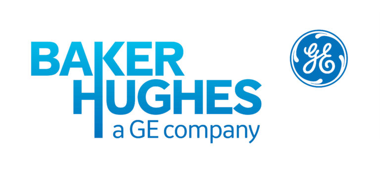

Summary
Oil and Gas professional with 8+ years experience in operations onshore and offshore. Including Drilling and Coring operations, mining equipment and applications engineering. Equipped with excellent communication skills and ability to collaborate with both office and field staff. Effective multitasking, delegation, and prioritization skills to improve bottom line and meet operational needs with a strong focus on automation using tools such as Python.
Expertise
Drilling Operations | Engineering | Frontline Leadership | Mentorship | Project Management | Health and Safety | Drilling Dynamics| Automation | Data Analysis | Technical Sales
Technical Skills
Logging While Drilling | Directional Drilling | Remote Operations | Hydraulics | Torque & Drag | SQL | Python | Microsoft Office | Visual Basic (VBA) | HTML | CSS | Formation Evaluation | Offshore Operations | Upstream Operations | Applications Engineering
Professional Experience
Operations Engineer P.Eng.
Baker Hughes, Calgary, AB
2016 - present
2016 - present
Remote Drilling Operations
- Slash turn around on final deliverables to client from weeks to days, maintaining quality control excellence
- Reduced training interval for junior engineers by over 50%, utilizing remote technical support in addition to improved regional workflows and training material, without increasing non-productive time
- Oversee Logging While Drilling services for 2-3 wells remotely, troubleshooting equipment, processing formation evaluation data, and interfacing with various stakeholders on daily operations
Applications Engineering
- Designed SQL database of 18,000+ Coring and Wireline field jobs, with integrated paperwork and custom reports to track performance, increasing sales by over 10%
- Increase recovery of onshore and offshore coring services, utilizing hydraulics, torque & drag analysis. Achieving world record 207m recovery, saving operator four trips, seven days
Field Engineer E.I.T.
Baker Hughes, Calgary, AB
2013 - 2016
2013 - 2016
Field Operations
- Lead coring field operations, responsible for daily client invoicing, in-field inventory management, safe core processing/recovery, optimizing downhole parameters and servicing equipment in the field
- Supervise on-site logging while drilling services, ensure safe operations as well as rigging-in equipment, providing frontline technical support, processing formation evaluation data and mentoring junior Field Engineers
Supply Chain Intern
Finning Canada, Fort McMurray,AB
2011
2011
Trucks and Auxiliary Intern
Suncor Energy, Fort McMurray, AB
2010
2010
Oil Sands Technician
SGS Canada, Fort McMurray, AB
2007 - 2009
2007 - 2009
Education
BSc. in Chemical Engineering
University of Alberta, Edmonton, AB
2009 - 2013
2009 - 2013